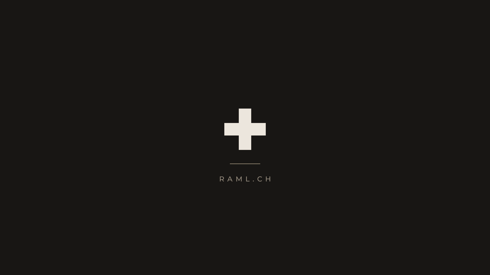
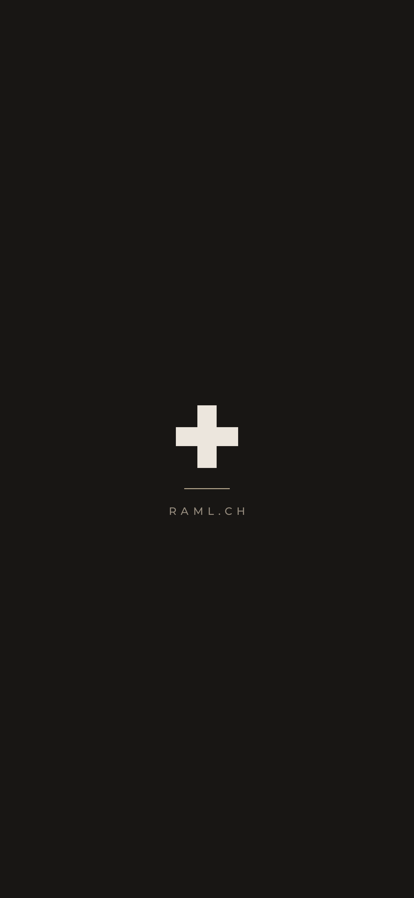

00Overview
Quiet, precise, and now with weight
Version 3 keeps everything people recognise: paper and ink, the Swiss red, the wordmark, the cross. What changes is the material. Surfaces are soft clay, lit from the top left. Things you can press rise out of the page; things you fill in sink into it. Depth replaces the hairline as the way the eye finds structure.
01Wordmark & logo
The wordmark
The name in Cormorant Garamond Medium, all caps, tracked +0.24em, with the tagline beneath in Schibsted Grotesk. The wordmark is type, so it stays flat: clay is for the surface it sits on, never for the letters.
Do & don’t
02The mark
The Swiss cross, flat and in clay
The mark has two finishes with one geometry. The flat mark covers favicons, app icons, stamps and print. The clay mark is the brand’s one rich object: a red tile with a soft sheen and the cross pressed into it, so the ground shows through as a dent. Use the clay mark at 64 px and up, and once per view.
Fixed geometry for both finishes: arm thickness 21.5% of the square, arm length 62%, corner radius 10%. The clay finish adds light, never shape: no bevels on the outline, no extra rounding, no glow.
03Colour
Palette
The same paper, ink and Swiss red as before, plus Well, the slightly darker paper that pressed surfaces sink into. Clay never brings a new hue: depth comes from light and shadow on these colours only.
Usage balance
Paper and ivory carry the page, ink carries the type, red is a thin seasoning.
* Ink prints as rich black C40 M30 Y30 K100. Flag-red reference for the mark: Pantone 485 (≈ #D52B1E). Body text and Stone Text on cream clear WCAG AA; Stone is for non-text only.
Dark mode
Follows the device. Dark clay is lit the same way: a faint warm highlight up-left, a deep shadow down-right. Use the tokens and it comes for free.
Detection & response
Same hierarchy and the same light, on an ink ground.
Charts
Series in this order. Ink carries the main series; red marks only the value that matters. Charts sit flat inside a card: the data never gets clay.
04Typography
One working typeface, one signature
Schibsted Grotesk does all the work: headlines, body, labels, buttons, data. Cormorant Garamond is the signature: the wordmark and the LR monogram, nothing else. Type is always flat, never embossed.
Everything
Regular 400 · Medium 500 · SemiBold 600
Signature only
Cormorant Garamond Medium 500
Type scale
Web font setup
05Depth & clay
Three heights and a dent
Everything is made of the same clay as the page. Light comes from the top left, so every raised surface catches a highlight up-left and casts a warm shadow down-right. Pressed surfaces invert it. Use the elevation tokens; never write a shadow by hand.
- One light. Highlights up-left, shadows down-right, on every element, in both themes.
- Three heights. Controls at raise-1, cards at raise-2, and a single hero object per page at raise-3. Pair raised surfaces with
--clay-bodyfor the soft inner rim. - Press means input. Fields, tracks and wells sit at
--presson the Well colour. Buttons drop from raise-1 to press while held. - Same clay. Raised surfaces are Ivory on Paper. Ink and red fills use
--sheeninstead of the paper shadows. - No clay inside clay. Inside a card, separate with hairlines or a well, never another raised card.
- Type, icons and data stay flat. No text shadows, no embossed letters, no clay bars in charts.
- Depth is never the only signal. Labels, text and a 2 px focus outline carry meaning. With
prefers-contrast: moreor forced colours, shadows give way to hairlines. - Flat where clay can’t travel. Email, print, favicons and the social image files stay flat.
Radius
Soft but not round: 14 px on controls, 24 px on cards, 32 px on panels, pills only for chips and switches. Nested corners subtract the padding between them. The mark keeps its fixed 10%.
06Components
Interface elements
Sentence-case labels, 48 px controls, one accent per view. Try them: buttons sink when pressed, the current tab rises out of its groove.
Buttons
Primary is ink with sheen. Secondary is ivory clay. Accent red appears once per view, if at all.
Form field
Navigation
The signature: the current item rises out of a pressed track. Use it for primary navigation and view switches.
Chips & links
Inline links stay flat: ink with a hairline, red on hover.
Well
A pressed area for secondary content: code, quotes, metadata.
Interaction & motion
- Press: on
:activethe shadow swaps from raise-1 to press and the control scales to 0.98, over 140 ms. - Hover changes colour only, inside
@media (hover: hover). Nothing lifts, floats or grows. - Transitions name their properties:
box-shadow,transform,color. Nevertransition: all. - Entrances under 500 ms with
cubic-bezier(0.23, 1, 0.32, 1), transform and opacity only, once per page. - Respect
prefers-reduced-motion: drop movement, keep the shadow swap. - Focus: a visible 2 px ink outline on
:focus-visible, outside the clay.
A ready-made implementation, light and dark, lives at pages.lram.ch/brand.css.
07Layout, spacing & mobile
Room to breathe, and room for shadows
Whitespace is still the main element. Clay needs a little more of it: leave at least 24 px between raised surfaces so their shadows never touch. Centre hero content; left-align reading content in a ~920 px column.
Mobile first
- Design 360–430 px first. One column; add columns with
repeat(auto-fit, minmax(240px, 1fr)). - The page never scrolls sideways. Wide tables and code scroll inside their own well.
- 16 px side padding plus
env(safe-area-inset-*). Card padding drops to 24 px. - Shadows scale down on phones: raise-2 on cards is enough; save raise-3 for the hero mark.
- Touch targets 48 px, 8 px apart. Nothing only on hover.
- Body 16 px, nothing under 12 px, fields at 16 px so iOS does not zoom.
- Never block zoom. Full-height heroes use
100svh. Onetheme-colorper scheme. - Test on a real phone: soft shadows look different on an OLED screen.
08Email
Signature & templates
Email stays flat. Most mail clients drop shadows, so clay would arrive broken. White or cream ground, the wordmark, one ink button, a thin footer rule.
Signature
Template
A short, plain-language summary of what changed, what it means, and what, if anything, you need to do.
Read the briefluca@raml.ch · lram.ch
10Wallpapers
Desktop & mobile
Monochrome dark wallpapers with the Swiss cross and the raml.ch lockup, from before the move to lram.ch and before clay. Files live in assets/wallpapers/.

raml-swiss-mac-mono-dark.png
raml-swiss-iphone-mono-dark.png11Voice & tone
How it should sound
Calm, precise, expert. The surfaces got softer; the words stay exact. Explain security in plain language, never with fear or hype.
Do
- Lead with what changed and what it means.
- Use plain verbs: block, review, restore.
- Be specific: name the system, the risk, the fix.
- Keep it short. White space in writing, too.
Don’t
- Sell with fear or breathless urgency.
- Hide behind jargon or acronyms.
- Over-promise (“100% secure”).
- Shout in all caps or stack exclamation marks.
12Licensing & credits
Free to use, with one small rule
Both typefaces are under the SIL Open Font License 1.1: free for personal and commercial use, including embedding. The licence files live in fonts/.
Cormorant Garamond
© 2015 The Cormorant Project Authors, Christian Thalmann, Catharsis Fonts.
SIL OFL 1.1 · fonts/OFL-CormorantGaramond.txt
Schibsted Grotesk
© 2023 The Schibsted-Grotesk Project Authors.
SIL OFL 1.1 · fonts/OFL-SchibstedGrotesk.txt
Ship the OFL file when…
- Self-hosting webfonts (
.woff2,.ttf) on a site. - Bundling the fonts into an app or installer.
- Keep the matching
OFL-*.txtbeside the fonts.
No licence file needed when…
- Loading the fonts from the Google Fonts CDN, the default here.
- Exporting documents: PDF, PNG, SVG, the printed card.
- The OFL does not bind documents made with the fonts.
No attribution is required for normal use. Never rename a modified font to “Cormorant” or “Schibsted Grotesk”. Colours, layout, the wordmark, the cross mark and the code are original to this brand and free to use and modify. “Pantone 485” is named only as a colour reference.
09Social media
Profiles & posts
The clay mark makes a strong avatar: it reads as an object even at thumbnail size. Banners and posts keep the cream ground, lots of air, and the mark as the only rich thing. The image files in
assets/are still the flat v2 set.Post template